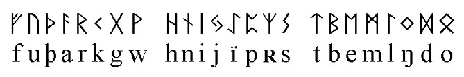
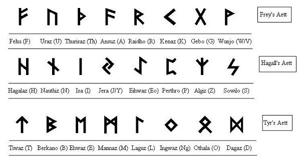

Руны
Существует много систем гаданий. Руническая – одна из множества. Руны – это традиционная северная символьная система. Я начинала в своё время именно с рун. Мне казалось, что в отличие от карт Таро, используя их, меньше вероятность прибегнуть к субъективной оценке. Изображения в таро обусловлены фантазией художника, в рунах же – это чёткие прямые линии.
Руны – это система древнескандинавского письма, каждый символ в которой имел своё магическое значение. Рунический алфавит называется Футарк, что означает первые шесть знаков рунического ряда: Феху, Уруз, Турисаз, Ансуз, Райдо, Кено. Существуют несколько футарков с разным количеством рун и особенностями их написания. На разных территориях и в разное время могли пользоваться отличными знаками, но это уже проблемы историков. Для гадания и магических целей подходит наиболее разработанный Старший Футарк из 24 рун. 24 руны, которые разделены на 3 этта. Этт – группа из восьми рун. Считается, что чёткая последовательсть рун описывает последовательное творение мира. Иногда добавляется 25-ая руна Верт, она была добавлена Ральфом Блюмом. Считается, что она обозначает какую-то тайну либо то, что на вопрос не нужно знать ответ, человеку предоставляется полная свобода выбора. Я считаю это добавление абсолютно лишним. 24 руны являются законченной системой и дополнительная руна только уводит в сторону субъективного.
Порядок Старшего Футарка строго установлен, кроме одного: в разных вариантах последней в ряду ставят либо руну Отал либо Дагаз. Мне больше нравится вариант с руной Дагаз в конце.
Обычно руны вырезаются на природных материалах: дерево, камень. Во время вырезания, человек произносит названия рун нараспев, визуализирует их и взывает к соответствующим божествам. Далее руны окрашиваются (по традиции – кровью либо составом, в котором есть кровь) и освящаются.
Вы можете получить консультацию по рунам, связавшись со мной в разделе Обратная связь. Как и в случае с предсказанием на таро, есть ряд вопросов, на которые я не вижу смысла гадать. Это всевозможные вопросы про «карму», «прошлые жизни», а также прогнозы на очень отдалённое время.
Я предлагаю вам пройти курс по обучению гаданию на рунах, чтобы вы научились получать ответы самостоятельно и помогать другим людям. Оставьте свою заявку в разделе Обратная связь и я свяжусь с вами.